Claude를 만드는 앤트로픽(Anthropic)이 2026년 10월 26일 미국 증권거래위원회(SEC)에 상장 신청서(S-1)를 공개 제출했습니다. 티커는 ANT, 거래소는 나스닥 글로벌 셀렉트 마켓입니다. 공모가와 주식 수는 아직 비어 있습니다.
이해상충 고지: 이 페이지의 원문 분석과 초안 작성에 앤트로픽이 만든 AI인 Claude가 쓰였습니다. 그래서 숫자는 모두 S-1 원문에서 확인할 수 있는 것만 썼고, 회사 자랑 문구는 회사 주장으로 표시했습니다. 투자 권유가 아닙니다.
지금까지 앤트로픽은 회원제 식당이었습니다. 아마존·구글 같은 큰손과 벤처투자자만 지분이라는 케이크 조각을 살 수 있었습니다. 상장은 식당 문을 열고 줄 선 손님 누구에게나 번호표를 나눠 주는 일입니다. 대신 문을 열려면 주방 위생 점검표와 장부를 전부 벽에 붙여야 하는데, 그 서류가 S-1입니다.
S-1 표지 기준으로 정리하면 이렇습니다. 상장 대상은 1주 1표인 클래스 A 주식이고, 대표 주관사는 골드만삭스와 모건스탠리를 비롯해 22곳입니다. 다만 "주식을 몇 주, 얼마에 판다"는 칸은 비어 있고, 신청서도 아직 효력이 발생하지 않았습니다. 지금은 장부를 공개했다까지이지 주식을 판다는 아닙니다.
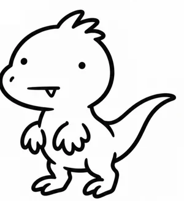
벨로키 한 줄"신청서 = 가게 장부 공개. 가격표는 아직 안 붙었어."
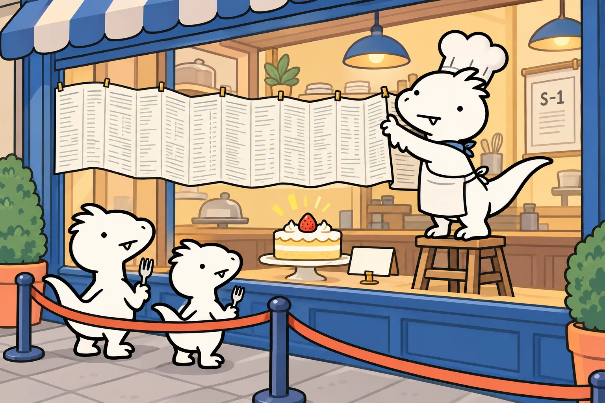
공모 규모는 최대 1,000억 달러, 기업가치는 1조 8,000억~2조 달러가 거론된다는 보도가 있습니다. 둘 다 회사가 확인한 숫자가 아니라 언론 보도입니다. 가격 범위가 S-1 수정본에 들어오는 날이 진짜 숫자를 보는 날입니다.
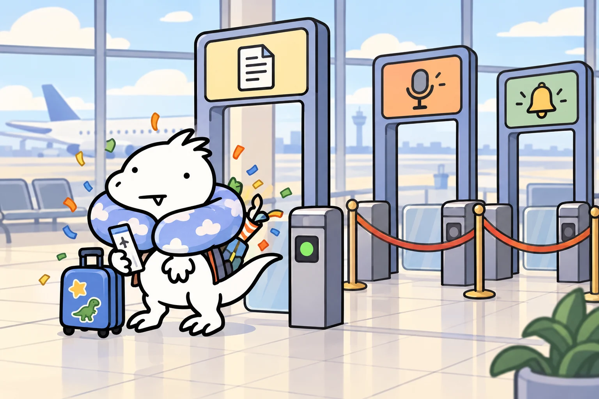
연간 매출은 2023년 4,100만 달러 → 2024년 3억 8,600만 달러 → 2025년 45억 8,500만 달러였습니다. 그리고 2026년에는 상반기에만 162억 8,600만 달러를 벌었습니다. 아래는 S-1에 실린 분기 매출과 영업이익입니다(단위: 백만 달러).
핵심은 컴퓨트(서버·칩) 비용이 매출 대비 얼마냐입니다. 2025년 1분기에는 매출 1달러를 벌려고 컴퓨트에 2.51달러를 썼는데, 2026년 2분기에는 0.48달러로 내려왔습니다. 손님이 몰려도 주방 가스비가 그만큼 늘지 않게 된 겁니다. 2025년 3분기 손실이 유독 큰 건 저작권 집단소송(Bartz) 합의금 15억 달러가 한 번에 들어갔기 때문입니다.
고객 지표도 회사의 핵심 주장입니다. 연 100만 달러 이상 쓰는 고객이 1,900곳 넘게, 1,000만 달러 이상은 약 250곳입니다. 순매출유지율(NRR)은 약 900%라고 밝혔습니다. 전년 동기 3개월에 매출이 있었던 동일 고객 집단의 이번 3개월 합산 매출이 약 9배라는 뜻입니다. 개별 고객마다 평균 9배를 쓴다는 뜻은 아니며, Pro·Max 구독자는 제외한 회사 정의입니다.
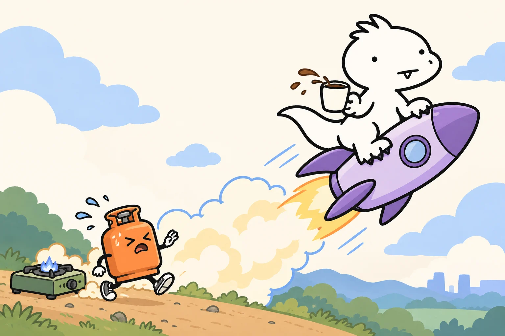
"상반기 순손실 807억 달러"라는 제목을 보면 망한 회사 같습니다. 그런데 S-1 손익계산서를 펴면 그중 723억 8,800만 달러가 "전환사채·파생부채·SAFE의 공정가치 변동"입니다. 영업손실은 6억 9,300만 달러뿐이었습니다.
쉽게 말하면 이렇습니다. 앤트로픽은 예전에 "나중에 우리 주식으로 바꿔 줄게"라는 차용증을 투자자에게 써 주고 돈을 빌렸습니다. 회사 가치가 폭등하면 그 차용증으로 받을 주식 가치도 커집니다. 회계 규칙은 이걸 "회사가 갚아야 할 몫이 커졌다"며 손실로 적습니다. 회사가 잘 될수록 장부상 손실이 커지는 역설입니다.
S-1에 따르면 아마존의 전환사채 등은 상장 직전에 주식으로 전환됩니다. 전환이 끝나면 이 평가손 항목은 크게 줄어들 가능성이 높습니다. 그래서 앞으로 볼 숫자는 순이익보다 영업이익과 영업현금흐름입니다.
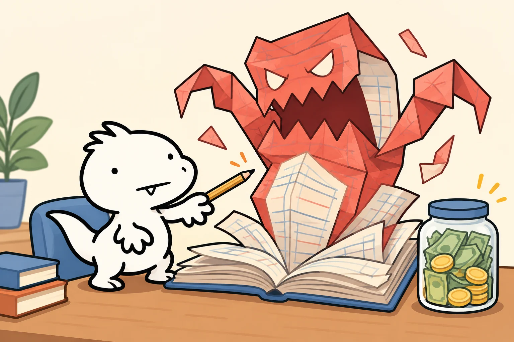
앤트로픽은 공익법인(PBC)입니다. 델라웨어 법상 주주 이익뿐 아니라 "인류의 장기적 이익을 위한 첨단 AI의 책임 있는 개발"이라는 목적을 함께 고려해야 하는 회사입니다. 그리고 S-1에는 일반 회사에서 보기 힘든 주식 종류가 다섯 가지나 나옵니다.
장기공익신탁은 앤트로픽 주식으로 돈을 벌지 않는 5명의 수탁자(AI 안전·국가안보·공공정책 전문가)로 구성됩니다. 축구로 치면 구단주(주주)와 별개로 안전 심판단이 선발 라인업 과반을 정하는 구조입니다. 또 회사는 상장 전에 전체 희석 주식의 5%를 공익 목적 자회사에 넘겼고, 주가가 기준 이정표보다 50% 오를 때마다 이사회 재량으로 추가 지분을 최대 2%씩 발행할 수 있는 체계를 두었습니다.
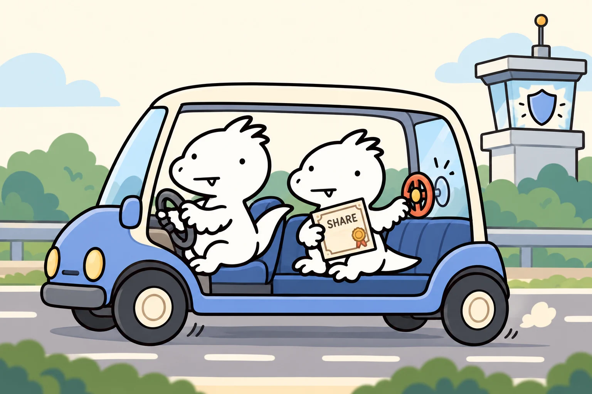
AI 회사의 가장 큰 비용은 칩과 데이터센터입니다. 앤트로픽은 AWS 트레이니엄, 구글 TPU, 엔비디아 GPU, AMD GPU를 섞어 쓰는 "멀티칩" 전략을 씁니다. 그리고 공급을 확보하려고 장기 약정을 맺었습니다. 예를 들어 구글과는 2026년 4월부터 2033년 7월까지 최소 약 1,145억 달러를 쓰기로 했고, 덜 쓰면 차액을 물어야 합니다(S-1).
S-1은 전체 약정 금액 칸을 아직 비워 두었고, 대부분이 2030년 말까지, 나머지는 2031~2045년에 집행된다고만 적었습니다. 한 투자 매체(The VC Corner)는 S-1에 나온 구글·아마존·마이크로소프트·브로드컴 등 개별 계약을 더해 약 6,370억 달러로 계산했는데, 이건 매체의 합산입니다.
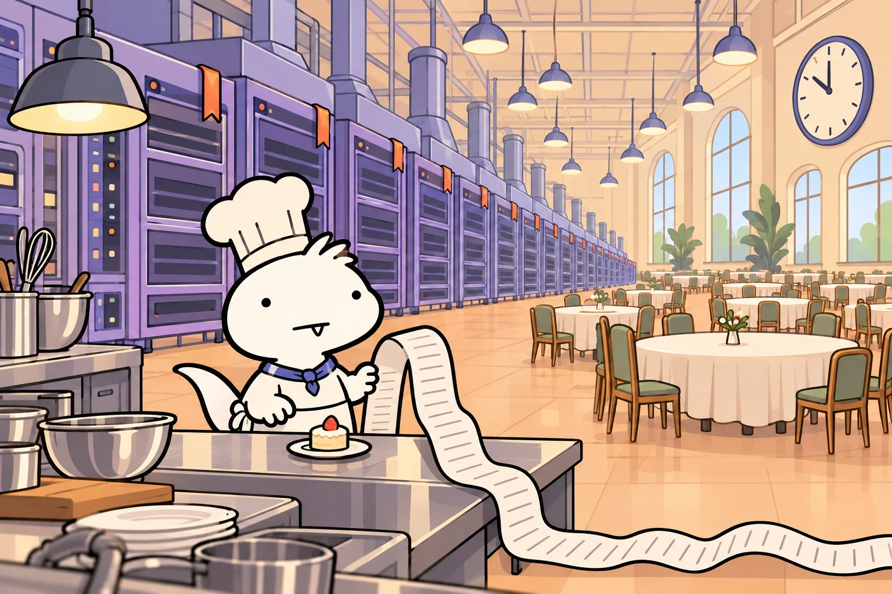
아래는 S-1 숫자와 과거 사례를 바탕으로 한 해석입니다. 확정된 사실이 아니라 관찰 포인트로 읽어 주세요.
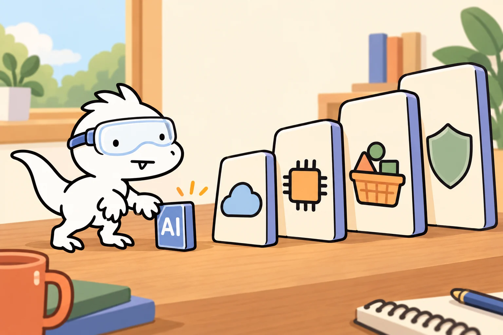
아래는 공식 공모가와 첫 거래일입니다. 공모가는 상장 전 배정 가격이며 첫날 종가나 현재 주가가 아닙니다. 마지막 열은 이후 실적을 볼 때 사용할 비교 기준입니다.
| 기업 | 첫 거래일 | 공식 공모가 | 이후 볼 사업 지표 |
|---|---|---|---|
| 구글 | 2004-08-19 | 85$ | 광고 매출과 수익성 |
| 페이스북 | 2012-05-18 | 38$ | 모바일 수익화와 광고 효율 |
| 알리바바 | 2014-09-19 | 68$ | 사업 성장과 규제·지정학 |
| 사우디 아람코 | 2019-12-11 | 32 SAR | 유가·현금흐름·배당 정책 |
| 우버 | 2019-05-10 | 45$ | 거래 규모와 영업현금흐름 |
| 리비안 | 2021-11-10 | 78$ | 인도량·차량당 원가·현금 소진 |
| Arm | 2023-09-14 | 51$ | 라이선스와 로열티 매출 |
| 코어위브 | 2025-03-28 | 40$ | GPU 가동률·차입·고객 집중 |
제이 리터 교수의 IPO 장기 성과 자료는 첫날 상승과 이후 장기 수익을 구분해 보여줍니다. 매수가격·기간·분할 반영 여부를 맞춰 비교해야 합니다.
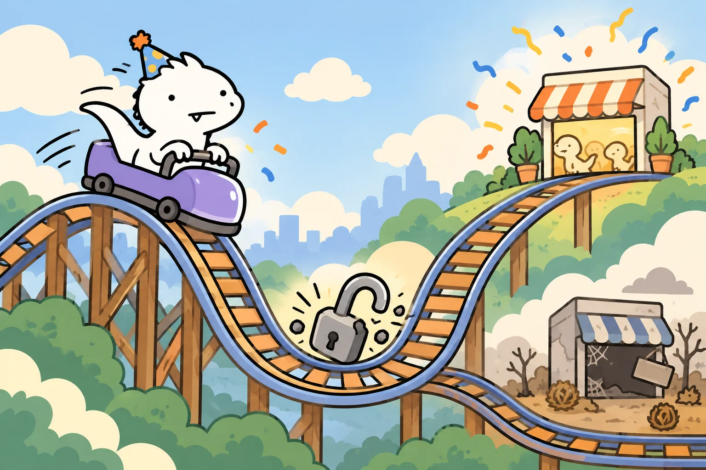
가격 예측이 아니라 "어떤 숫자가 나오면 어느 길로 가는지"를 나눈 지도입니다. 버튼을 눌러 비교해 보세요.
| 시기 | 예정된 이벤트 | 볼 숫자 |
|---|---|---|
| 2026년 말 | 공모가 확정·상장 (보도상 11월) | 공모가 범위, 실제 조달액, 첫날 시가총액 |
| 2027년 상반기 | 첫 분기 실적 발표, 보호예수 해제 구간 | 매출 성장률, 영업이익 흑자 유지 여부, 대량 매도 물량 |
| 2027~2028년 | 지수 편입 가능성, 경쟁사 상장 여부 | 컴퓨트 비용÷매출 (26년 2분기 48%), 100만$+ 고객 수 |
| 2029~2031년 | 컴퓨트 약정 대부분 집행 (S-1: 상당액이 2030년 말 이전) | 약정 대비 실제 사용량, 영업현금흐름, 모델 가격 하락 속도 |
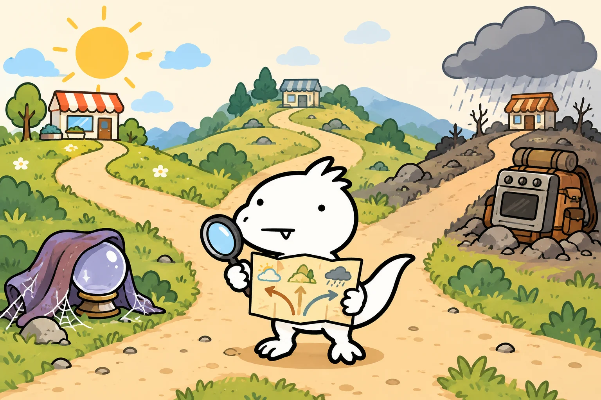
벨로키 한 줄"케이크가 맛있어 보여도, 한 조각 값이 식당 전체 몇 년치 매출인지는 계산해 보고 줄 서자."
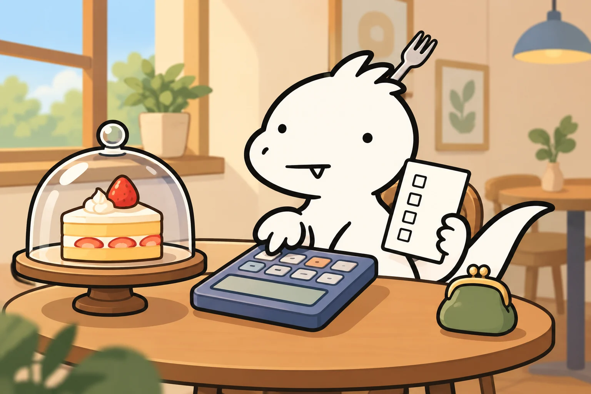